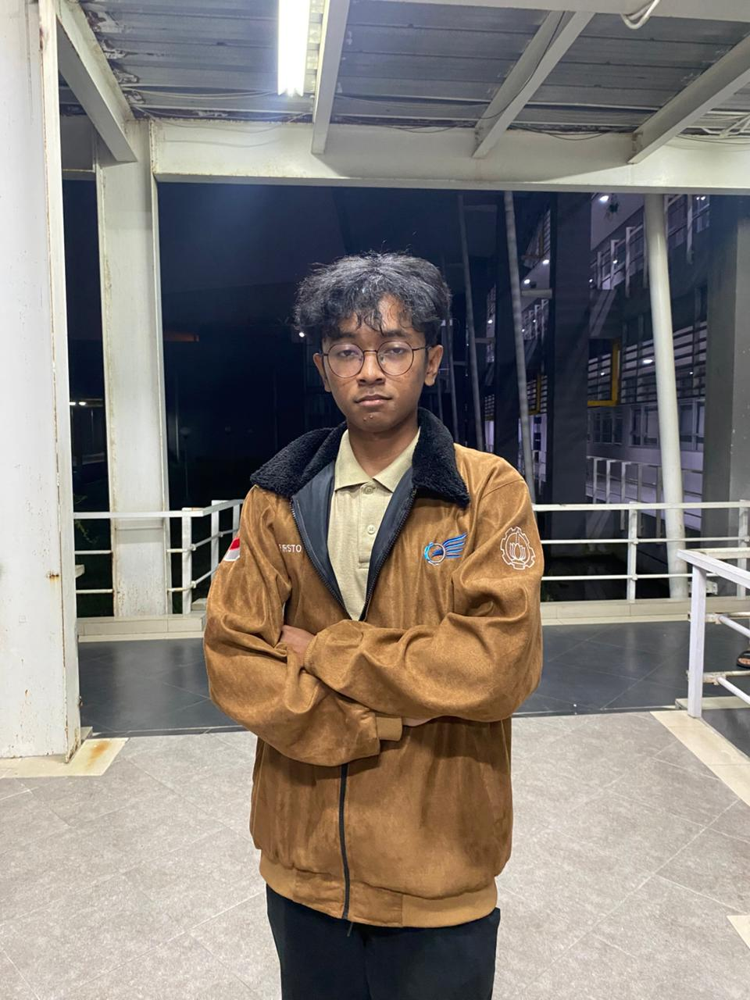

Hi, I'm Firsto.
I'm a student interested in computational modeling and embedded systems. I enjoy exploring how simulations help us understand real-world systems and how software and hardware work together.
Surabaya, Indonesia
Connect

I'm a student interested in computational modeling and embedded systems. I enjoy exploring how simulations help us understand real-world systems and how software and hardware work together.
Surabaya, Indonesia
